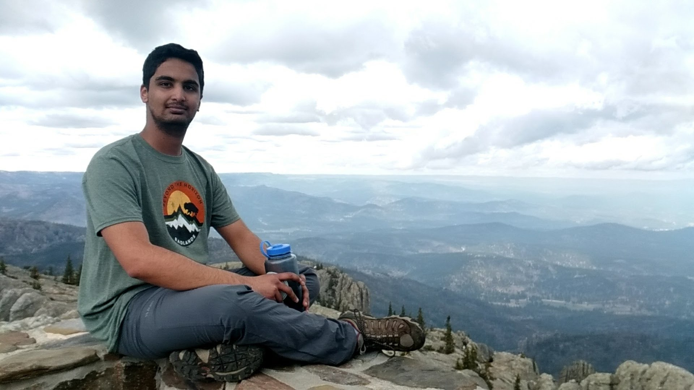

About Me

Hi, I'm Ishan.
By education, I'm a computational physics researcher with experience in climate modeling. While my formal training lies in physics, my research interests have expanded to encompass sustainable food systems, ethnobotany, and the anthropology of food. Beyond research, I'm passionate about education, mountaineering, foraging, cooking, and permaculture.
These interests may seem diverse, but food truly ties them all together. Let me explain.
I've wanted to be a physicist since I was 15, driven by a romantic idea of scientific research. But throughout my postgraduate career, I became progressively disillusioned. I watched admired colleagues dedicate their careers to niche investigations that ultimately led nowhere. I witnessed the corrosive effects of publish-or-perish culture, driving researchers toward ethically questionable practices. I saw promising work abandoned when funding dried up or couldn't be secured because it lacked immediate profitability.
The COVID lockdowns gave me time to reflect deeply. I realized there's no shortage of great physicists doing important work, but I was no longer the right person to contribute to that narrow path, especially given my diverse interests. I didn't want to be a scientist anymore. I wanted to be a science communicator.
Why food? Because food is the perfect lens through which to communicate science. It connects everything I care about and elicits visceral reactions that abstract concepts never could. Consider how Harvard's Science and Cooking program uses culinary techniques to teach heat transfer, phase transitions, and elasticity. Or how Harold McGee transformed kitchen chemistry, into accessible science that influenced chefs worldwide. Food allows us to explore why we eat what we eat, how it's grown, processed, and transported, and the politics surrounding it all.
Through food, we can examine how statistics become tools of both information and misinformation in dietary science. We can explore the chemistry of the Maillard reaction in your morning toast, the biology of fermentation in your yogurt, and the physics of emulsification in your mayonnaise. Most critically, we can understand the environmental consequences of our food systems—which contribute one-third of global greenhouse gas emissions and face unprecedented threats from climate change.
My computational modeling background directly applies to agricultural systems that use machine learning and remote sensing to predict food security impacts. The intersection of Indigenous knowledge and modern agroecology offers profound lessons about sustainable food production. Even urban foraging reveals how wild foods can contribute to dietary diversity and ecosystem services.
Food is universal yet deeply personal. It's where physics meets culture, where climate science meets daily choices, where abstract models meet tangible impacts. It's the perfect vehicle for making complex science accessible, relevant, and actionable. That's why I believe food- in all its scientific, cultural, and environmental dimensions -is the thread that weaves together my journey from computational physics to science communication.